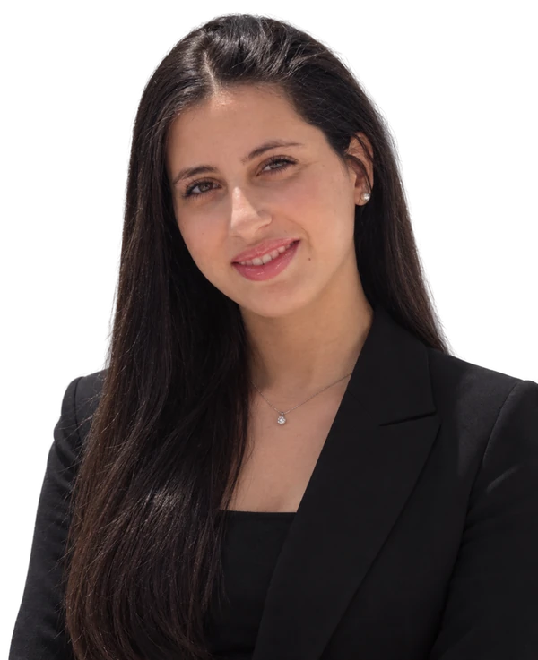

Ikbel
.
Hamdi
☰
FR
EN
Ikbel
Hamdi
GitHub ↗
LinkedIn ↗

Full-Stack
AI & GenAI Agents
DevOps · MLOps
أهلا
0
0
0
Top 10
ESPRIT ·
2022 – 2027 ·
2022
NVIDIA DLI
MASSAI Summer School (2025)
365 Data Science
SQL (2025)
C1
C1
A2
Email
hamdikbel2@gmail.com
+216 50 483 892
LinkedIn
ikbel-hamdi-706427286
GitHub
github.com/hamdikbell
✕
‹
›